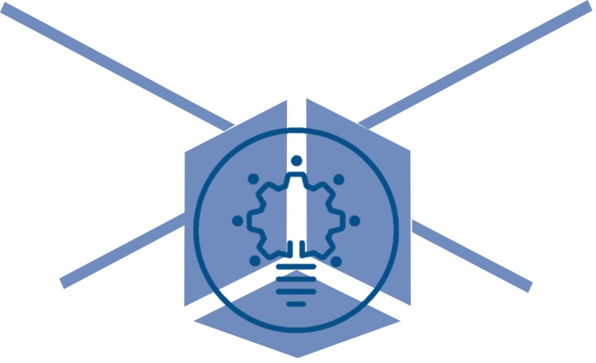

Course Description#
Authors#
Marc Budinger (marc.budinger@insa-toulouse.fr)
Objectives and content#
Mechatronic and space systems are highly complex systems that often have to meet specific and stringent requirements depending on the application. They require the joint development of technological systems and control software. This course provides an introduction to the concepts and development of such systems:
Requirements analysis and preliminary design
Dynamic modeling and identification of multiphysics technological systems.
PID control and digital implementation.
Case studies#
This course will take as case studies the thermal and attitude control of Cubesats. For pedagogical reasons, the approaches will be deliberately simplified, and the digital implementation of the correctors will be done on Arduino boards.
Program#
##Technical requirement definition:##
Lecture (1.25 h, Marc BUDINGER, INSA Toulouse): Systems engineering approaches.
Lecture (1.25 h, Yann Cervantes, CNES): Satellite thermal control systems.
Homework (2.5 h): Reading documents (CubeSat) + First specification document.
Lecture (1.25 h, Marc BUDINGER, INSA Toulouse) : System modelling with fixed parameter models (Modelica & Jupyter notebook).
Tutorial (2.5h): Cubesat thermal model and power requirements of a thermal control system.
Homework (2.5h): Finalisation of the specification document and pre-design of a battery thermal control system.
##Control software definition:##
Lecture (1.25 h): Control software development and TCLab Introduction
Tutorial (2.5h): TClab card, identification step
Homework (2.5h): Identification of a model (1st, 2nd order) for control
Tutorial (2.5h): Control and validation by simulation & test (TCLab card + python)
Homework (2.5h): Control and validation by simulation on linearised model (Cubesat)
Lab (3.75h): Control prototyping (PID anti-windup) on microcontroller (arduino + TCLab card)
##Examination:##
Lab (2.5h): Response to a new need, examination
Motivated students can choose to meet an additional need for satelitte attitude control. They are invited to read and prepare the dedicated sections of this course.
Tools:#
Course website (https://sizinglab.github.io/SystemsEngineeringIntroduction/)
Course Github repository (SizingLab/SystemsEngineeringIntroduction)
Python (Jupyter Notebooks)